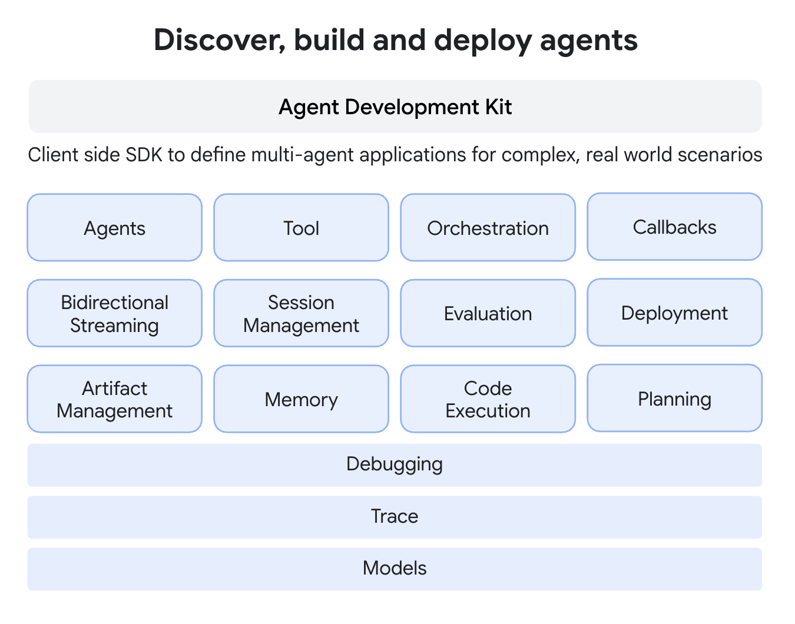
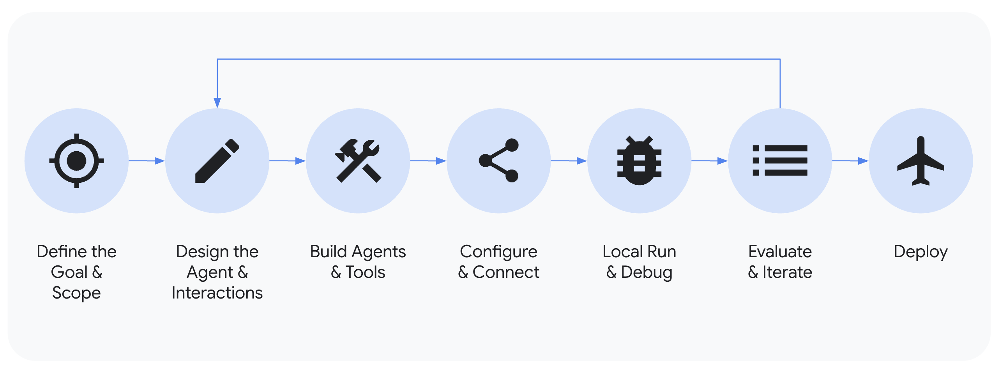

Agent Development Kit (ADK)¶
エージェントの構築、評価、デプロイをシームレスに！
ADKは、開発者がAI搭載エージェントを構築、管理、評価、デプロイできるように設計されています。複雑なタスクやワークフローを処理できる、対話型および非対話型の両方のエージェントを作成するための、堅牢で柔軟な環境を提供します。

コアコンセプト¶
ADKは、それを強力かつ柔軟にするいくつかの主要なプリミティブとコンセプトを中心に構築されています。以下はその要点です：
- エージェント (Agent): 特定のタスクのために設計された基本的な作業単位。エージェントは、複雑な推論のために言語モデル（
LlmAgent）を使用することも、実行を決定論的に制御するコントローラーとして機能すること（これらは「ワークフローエージェント」と呼ばれます：SequentialAgent,ParallelAgent,LoopAgent）もできます。 - ツール (Tool): エージェントに会話以上の能力を与え、外部APIとの対話、情報の検索、コードの実行、または他のサービスの呼び出しを可能にします。
- コールバック (Callbacks): エージェントのプロセスの特定の時点で実行するために提供するカスタムコードスニペットで、チェック、ロギング、または振る舞いの変更を可能にします。
- セッション管理 (
Session&State): 単一の会話のコンテキスト（Session）を処理します。これには、その履歴（Events）とその会話におけるエージェントの作業メモリ（State）が含まれます。 - メモリ (Memory): エージェントが複数のセッションにわたってユーザーに関する情報を思い出すことを可能にし、長期的なコンテキストを提供します（短期的なセッションの
Stateとは異なります）。 - アーティファクト管理 (
Artifact): エージェントがセッションやユーザーに関連付けられたファイルやバイナリデータ（画像、PDFなど）を保存、読み込み、管理できるようにします。 - コード実行 (Code Execution): エージェントが（通常はツールを介して）複雑な計算やアクションを実行するためにコードを生成し、実行する能力。
- プランニング (Planning): エージェントが複雑な目標をより小さなステップに分解し、ReActプランナーのようにそれらを達成する方法を計画できる高度な機能。
- モデル (Models):
LlmAgentを動かす基盤となるLLMで、その推論と言語理解能力を可能にします。 - イベント (Event): セッション中に発生する事象（ユーザーメッセージ、エージェントの返信、ツールの使用）を表す基本的な通信単位で、会話の履歴を形成します。
- ランナー (Runner): 実行フローを管理し、イベントに基づいてエージェントの対話を調整し、バックエンドサービスと連携するエンジン。
注意： Multimodal Streaming、評価、デプロイ、デバッグ、トレースなどの機能も、リアルタイムの対話と開発ライフサイクルをサポートする、より広範なADKエコシステムの一部です。
主要な機能¶
ADKは、エージェントアプリケーションを構築する開発者にいくつかの主要な利点を提供します：
- マルチエージェントシステムの設計： 階層的に配置された複数の専門エージェントで構成されるアプリケーションを簡単に構築できます。エージェントは複雑なタスクを調整し、LLM駆動の転送や明示的な
AgentTool呼び出しを使用してサブタスクを委任し、モジュール式でスケーラブルなソリューションを可能にします。 - 豊富なツールエコシステム： エージェントに多様な機能を持たせます。ADKは、カスタム関数（
FunctionTool）の統合、他のエージェントをツールとして使用すること（AgentTool）、コード実行のような組み込み機能の活用、および外部データソースやAPI（例：検索、データベース）との対話をサポートします。長時間実行ツールへの対応により、非同期操作を効果的に処理できます。 - 柔軟なオーケストレーション： 組み込みのワークフローエージェント（
SequentialAgent、ParallelAgent、LoopAgent）とLLM駆動の動的ルーティングを組み合わせて、複雑なエージェントのワークフローを定義します。これにより、予測可能なパイプラインと適応的なエージェントの振る舞いの両方が可能になります。 - 統合された開発者向けツール： ローカルで簡単に開発とイテレーションを行います。ADKには、エージェントの実行、実行ステップ（イベント、状態変更）の検査、対話のデバッグ、エージェント定義の視覚化のためのコマンドラインインターフェース（CLI）や開発者UIなどのツールが含まれています。
- ネイティブストリーミングサポート： 双方向ストリーミング（テキストと音声）のネイティブサポートにより、リアルタイムでインタラクティブな体験を構築します。これは、Gemini Developer APIのMultimodal Live API（またはVertex AI用）のような基盤となる機能とシームレスに統合され、多くの場合、簡単な設定変更で有効になります。
- 組み込みのエージェント評価： エージェントのパフォーマンスを体系的に評価します。フレームワークには、複数ターンの評価データセットを作成し、品質を測定し改善を導くためにローカルで（CLIまたは開発UI経由で）評価を実行するツールが含まれています。
- 広範なLLMサポート： GoogleのGeminiモデルに最適化されていますが、フレームワークは柔軟に設計されており、
BaseLlmインターフェースを通じてさまざまなLLM（オープンソースやファインチューニングされたモデルを含む可能性がある）との統合が可能です。 - アーティファクト管理： エージェントがファイルやバイナリデータを扱えるようにします。フレームワークは、エージェントが実行中に画像、ドキュメント、生成されたレポートなどのバージョン管理されたアーティファクトを保存、読み込み、管理するためのメカニズム（
ArtifactService、コンテキストメソッド）を提供します。 - 拡張性と相互運用性： ADKはオープンなエコシステムを推進します。コアツールを提供しつつ、LangChainやCrewAIを含む他の人気のあるエージェントフレームワークからのツールを開発者が簡単に統合し、再利用できるようにします。
- 状態とメモリの管理：
SessionServiceによって管理される、Session内の短期的な会話メモリ（State）を自動的に処理します。より長期的なMemoryサービスのための統合ポイントを提供し、エージェントが複数のセッションにわたってユーザー情報を思い出すことを可能にします。

はじめに¶
- 初めてのエージェントを構築する準備はできましたか？ クイックスタートをお試しください